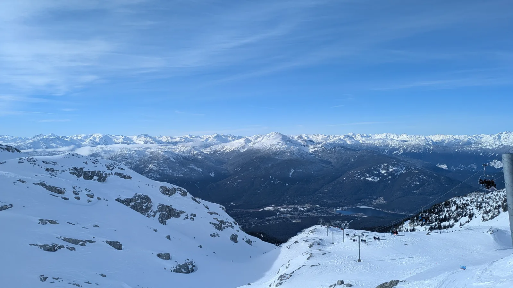
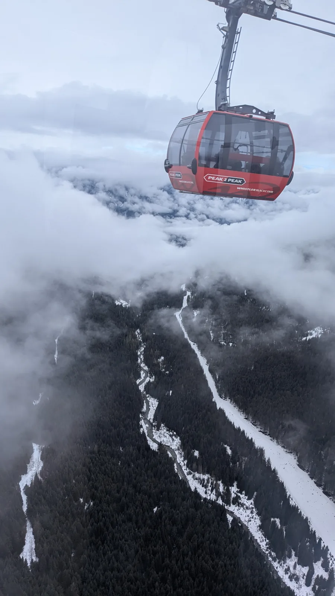
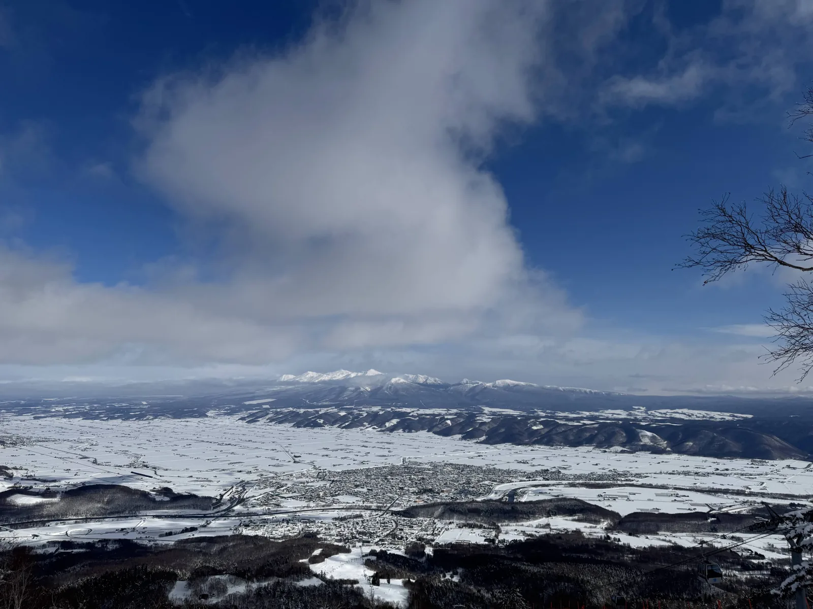
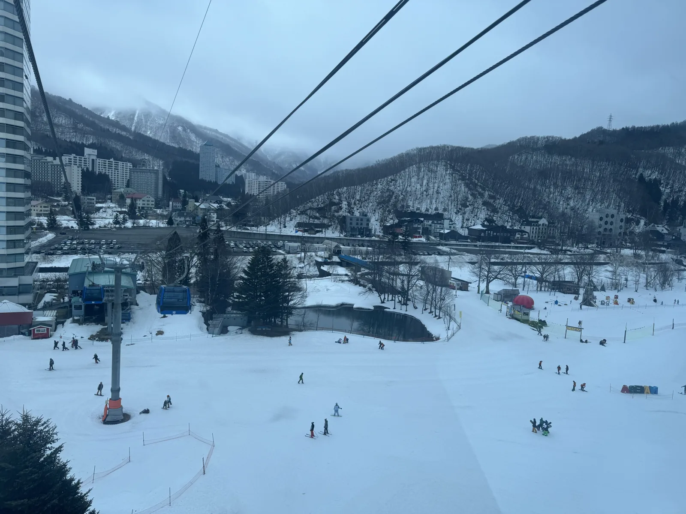
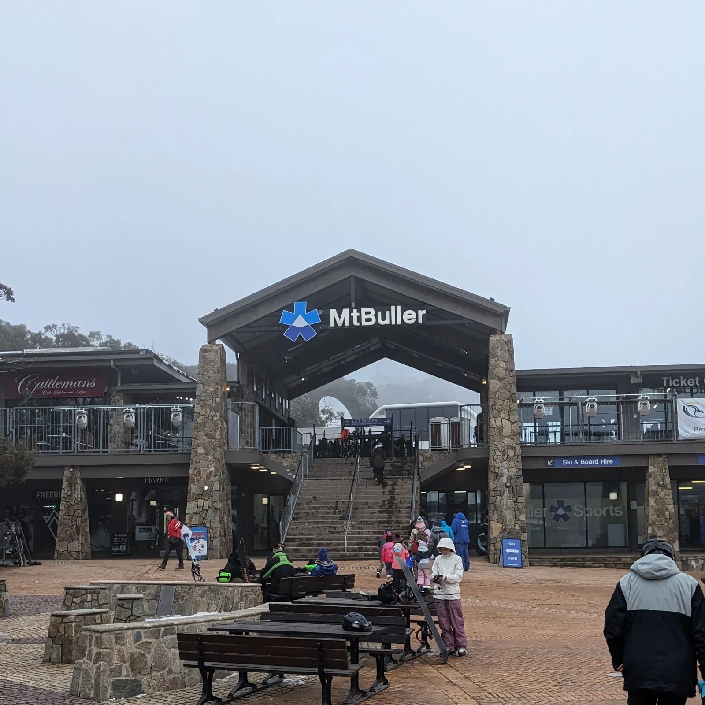
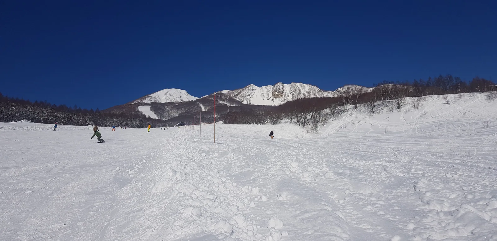
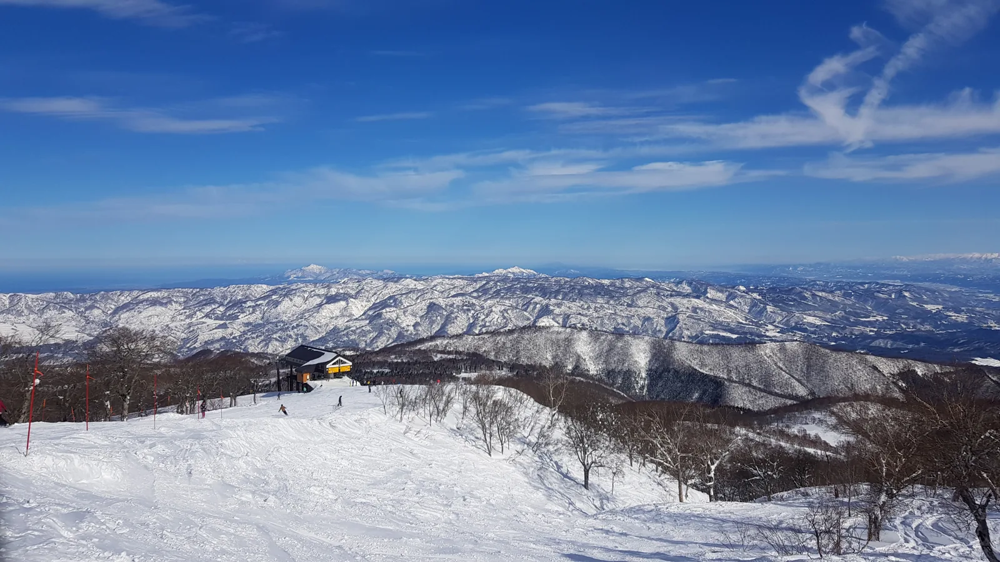
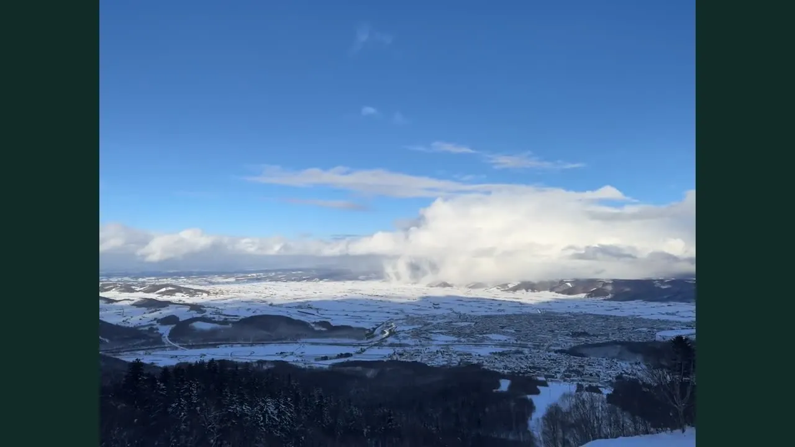
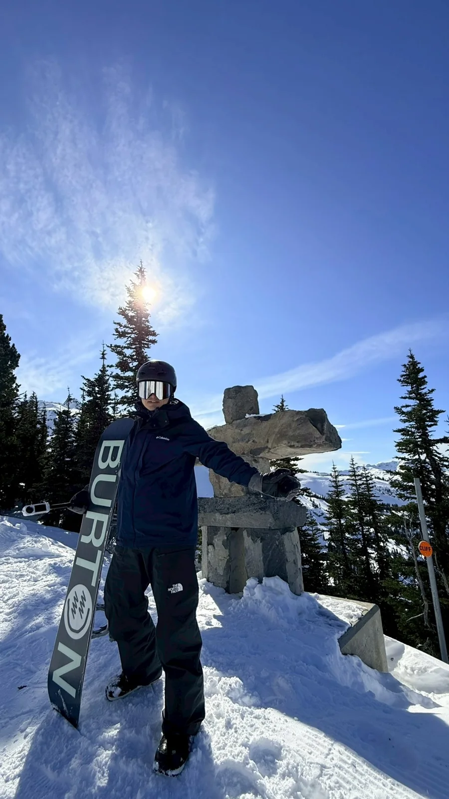

A LIFE BETWEEN MOUNTAINS
把日常
留在山下。
追著雪走，也找回自己的節奏。
從日本到加拿大，收藏值得再去一次的山。
Sam ChenDEVELOPER / SNOWBOARDER
2008 — 2026 / STILL EXPLORING
2008 — 2026 / STILL EXPLORING

Whistler Blackcomb惠斯勒相簿 ↗
36座雪場留下足跡
4個國家的冬日風景
23本公開雪場相簿
24段雪場短片與軌跡
從一座山開始
在世界地圖上，找到每一段滑雪足跡。
開啟雪場地圖02 / THE SCENES讓風景帶路
山稜、雪林與雲海，按雪場慢慢翻閱。
瀏覽全部雪場相簿03 / IN MOTION十秒，回到雪道
實拍、照片剪輯與軌跡，各自標示清楚。
觀看雪上影像01 / SELECTED JOURNEYS
下一眼，想看哪座山？
6 段精選旅行

2026 / CANADA惠斯勒
搭一段纜車，穿過山與雲的邊界。
查看雪場紀錄
2025 / HOKKAIDO, JAPAN富良野
粉雪之外，還有讓人停下來的遼闊。
查看雪場紀錄
2024 / NIIGATA, JAPAN苗場
熟悉的雪道，每次都有不同的風景。
查看雪場紀錄
2023 / VICTORIA, AUSTRALIA布勒山
換個半球，接著過冬天。
查看雪場紀錄
2019 / MYOKO, JAPAN杉之原
把妙高的晴空與雪林，收進記憶裡。
查看雪場紀錄
2020 / NAGANO, JAPAN野澤溫泉
長野的雪山，值得一再回望。
查看雪場紀錄
FURANO / 2025 · 現場片段02 / TEN SECONDS ON THE MOUNTAIN
有些風景，
動起來才完整。
每座雪場的一小段，把旅途留在十秒裡。
不必急著出發，先看一段山上的日常。

OFFLINE IS MY FAVORITE MODE.03 / THE PERSON BEHIND THE BOARD
寫程式，
也寫自己的雪道。
我是 Sam Chen，一個熱愛單板滑雪的程式設計師。從日本的粉雪到更遠的山脈，每趟旅行都是一次重新充電。
專注技術，馭雪如程；邁向高峰，不止於山。山下持續學習，山上享受當下。
在 Instagram 找到我04 / POSTCARDS FROM WINTER
把冬天的一角，帶回日常。
點開照片，讓風景大一點。